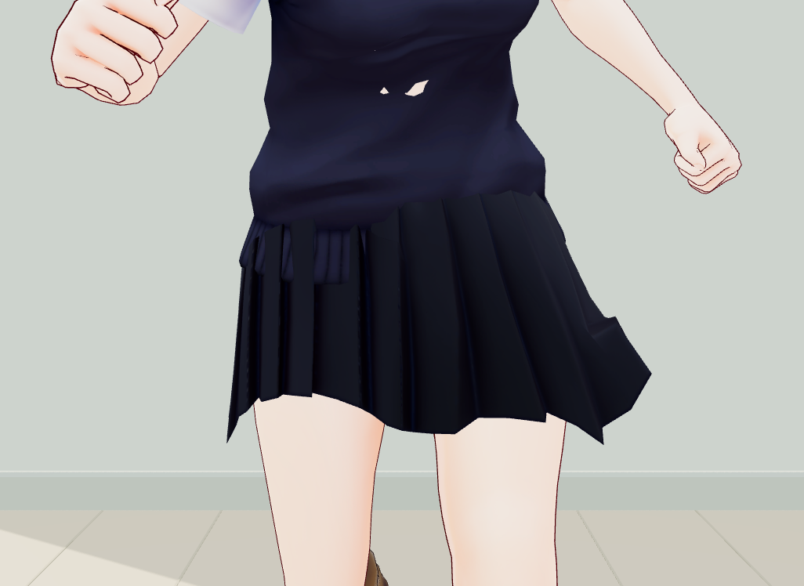
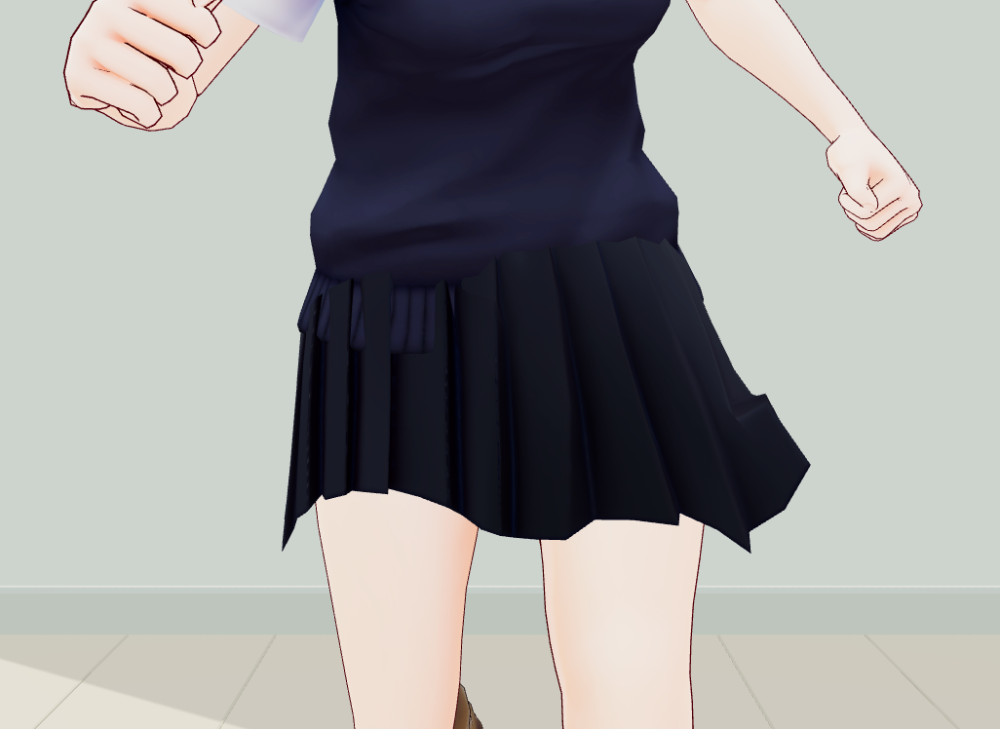
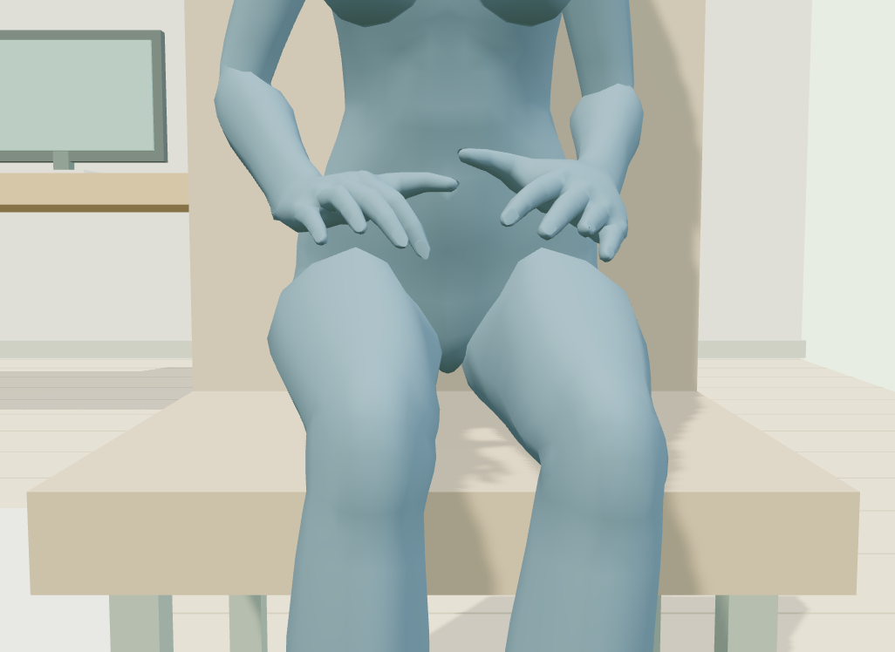

只验证原女性与原上衣。完整人体原网格、权重保留；穿衣时使用独立渲染索引，基础人体恢复完整显示。公开 4194 未替换。裙摆硬折、衣裙交叉和整套自然度仍未通过。
同脚本、房间相机和命令序列；真实时间录制，非逐帧严格同相位。新片模拟/墙钟 0.99645。录像存在不等于连续自然度验收。
同房间相机及7.6米路径，保留起步停止。不是三次稳态高速周期，也不是裙形通过。



房间恢复检查 · 静态对照时刻与相机 · 程序回归 · 从源重生成结果
许可及制作来源沿用归档的原候选；不是任意上衣自动适配或完整平台通过。